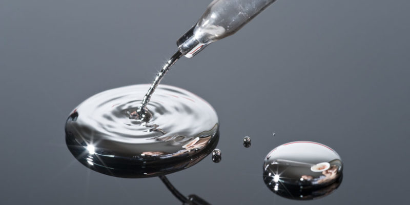

El mercurio es un metal de color plateado que se caracteriza por ser líquido a temperatura ambiente. Es muy denso, conduce la electricidad y puede evaporarse. Es tóxico y puede causar daños en la salud, por lo que debe manipularse con mucho cuidado.
El mercurio puede encontrarse en algunos pescados y mariscos debido a la contaminación del agua. Su consumo en cantidades elevadas puede ser perjudicial para la salud. No es un nutriente y no debe agregarse a los alimentos.
El mercurio es el único metal que se encuentra en estado líquido a temperatura ambiente. Su símbolo Hg proviene de la palabra latina hydrargyrum, que significa "plata líquida".